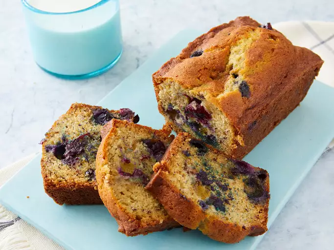

Blueberry Banana Bread Recipe

How To Make
This blueberry banana bread is delicious for breakfast, brunch, or an afternoon snack. This recipe makes three mini loaves. The bread is so flavorful you won't need butter!
Ingredients
- 2 Cups all-purpose flour
- 1 teaspoon baking soda
- 1/2 teaspoon salt
- 1 cup white sugar
- 1/2 cup butter, softened
- 2 large eggs
- 2 teaspoons vanilla extract
- 2 ripe bananas, mashed
- 1 cup fresh bluberries
Steps
- Preheat the oven to 350 degrees F (175 degrees C). Grease 3 mini loaf pans.
- Mix flour, baking soda, and salt together in a medium bowl.
- Beat sugar and butter with an electric mixer in a large bowl until light in color and fluffy.
- Add flour mixture a little at a time, beating until just combined into a thick batter. Fold in blueberries until evenly distributed.
- Pour batter into the prepared loaf pans.
- Bake in the preheated oven until a toothpick inserted into the center comes out clean, 30 to 35 minutes. Cool in the pans for 10 minutes, then transfer loaves to cool completely on a wire rack.